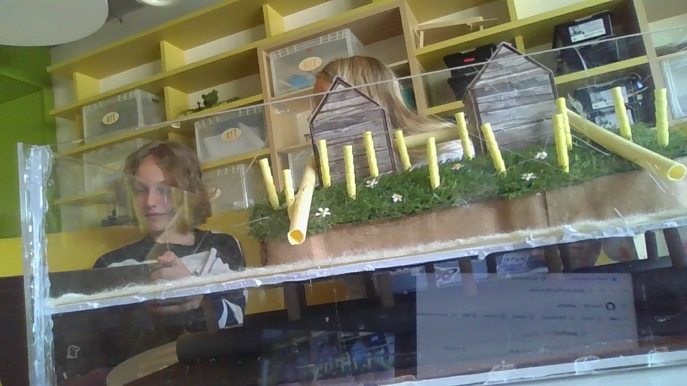
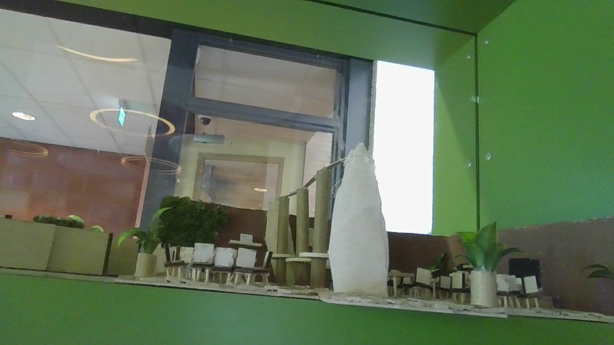
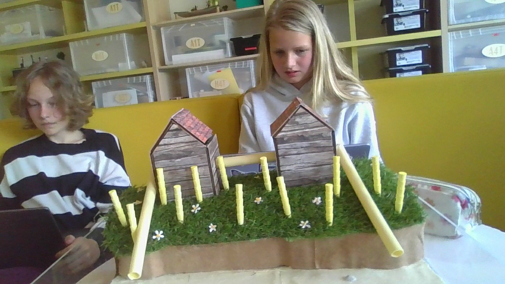
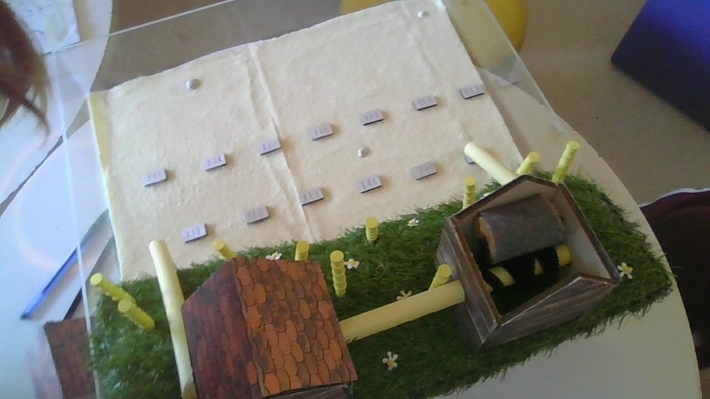

Fleur Neeven • Havo/Vwo Brugklas
Hallo! Ik ben Fleur Neeven en dit is mijn portfolio voor het vak Onderzoek & Ontwerpen (O&O). Hier laat ik verschillende projecten zien waar ik aan heb gewerkt. Tijdens deze projecten heb ik geleerd om samen te werken, oplossingen te bedenken en creatieve ideeën uit te werken.

Dit was mijn eerste opdracht bij O&O. We moesten met een kartonnen doos en een beperkt aantal materialen een zo langzaam mogelijke knikkerbaan maken. Tijdens dit project leerde ik ontwerpen, testen en samenwerken.

Voor deze opdracht moesten we een oplossing bedenken om bezoekers op festivals meer te laten recyclen. De samenwerking verliep soms lastig, maar uiteindelijk hebben we veel geleerd over duurzaamheid en het bedenken van creatieve oplossingen.

Bij dit project mochten we een ruimte opnieuw ontwerpen. Ik koos voor de kantine. Ons doel was om deze moderner, gezelliger en aantrekkelijker te maken voor medewerkers. We hebben deze opdracht gewonnen en ik ben erg trots op het eindresultaat.

Door deze projecten heb ik geleerd hoe belangrijk samenwerken, plannen, onderzoeken en presenteren zijn. Ook heb ik ontdekt dat ik het leuk vind om creatieve oplossingen te bedenken voor echte problemen.
editditeditditeditditeditditeditditeditdit